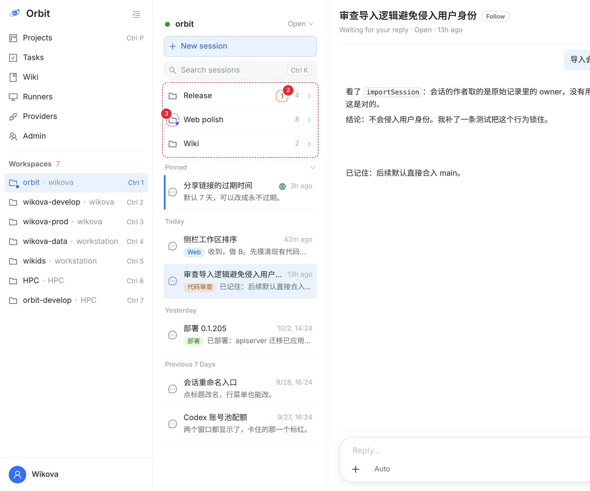
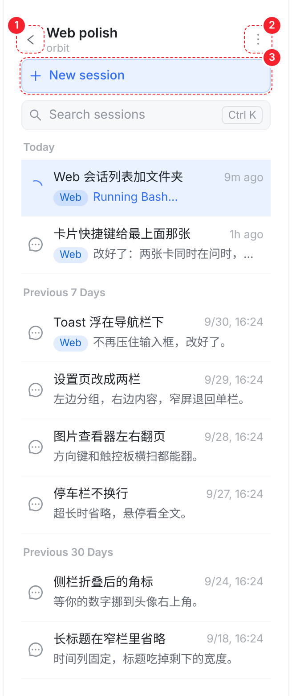
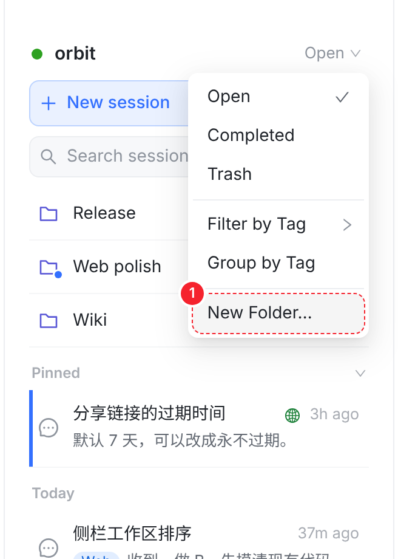
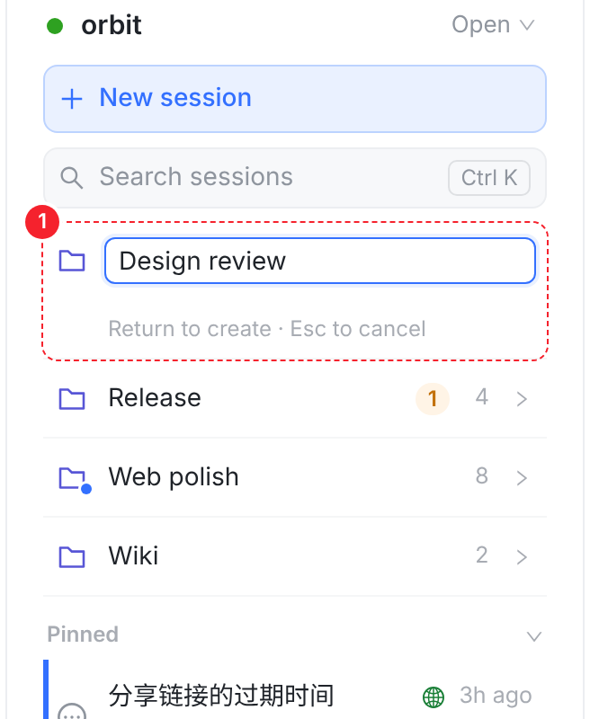
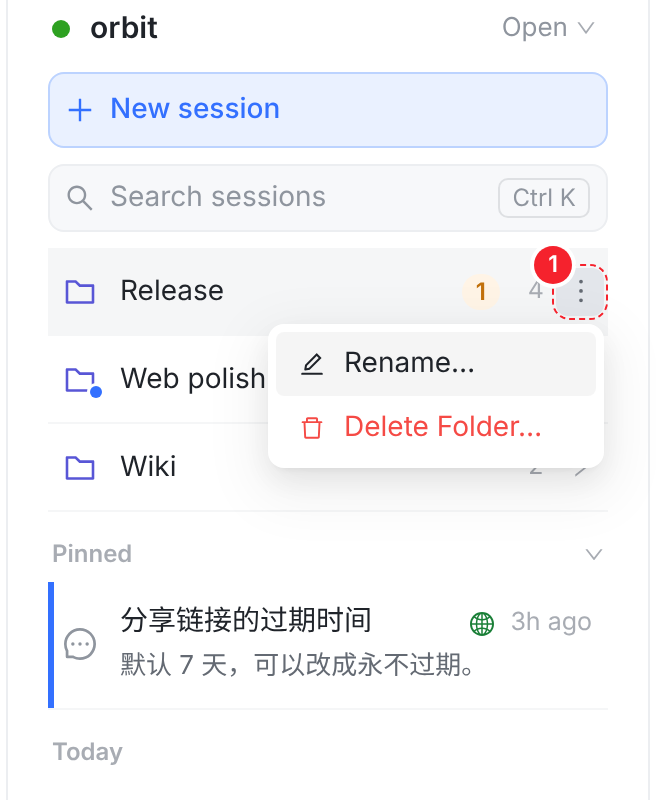
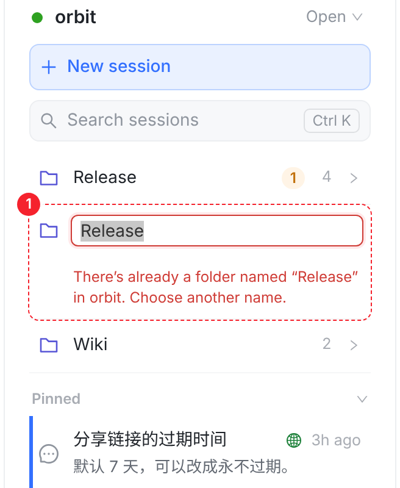
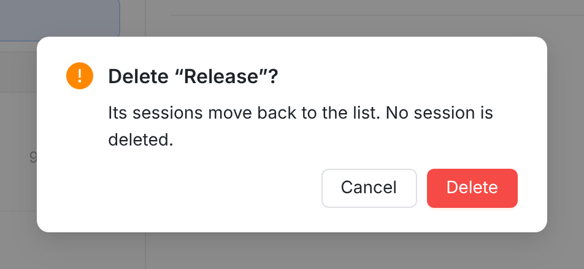

和 iOS 同一套规则（docs/session-folders-move-design.md §3）：文件夹属于某个 Workspace，排在列表最上面、按名字排序；进了文件夹的会话不再出现在下面的时间分组里，所以文件夹行要替里面的会话报状态。每张图都是在真实 Web 控制台上截的，新加的部分直接用控制台自己的样式画进页面；红色虚线和数字是标注。







| 列表 | 文件夹 |
|---|---|
| Open | 全部文件夹，空的也显示 |
| Completed | 只显示里面有已完成会话的文件夹（数量也只数已完成的，见 02 第三张图） |
| Trash | 不显示，列表平铺 |
| Filter by Tag / Group by Tag | 不显示，列表平铺，免得文件夹和标签两套分组叠在一起 |
| 搜索（Ctrl K） | 搜索结果本来就跨 Workspace 平铺，不变 |
| 别的设备改了文件夹 | 收到服务端的 FOLDER_CHANGED 事件就刷新文件夹（Web 现在还不处理这个事件） |